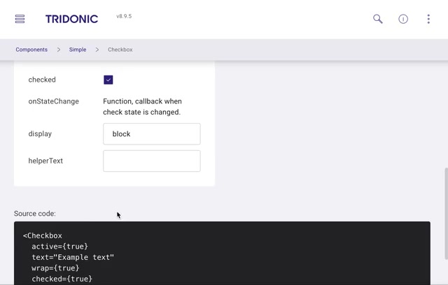
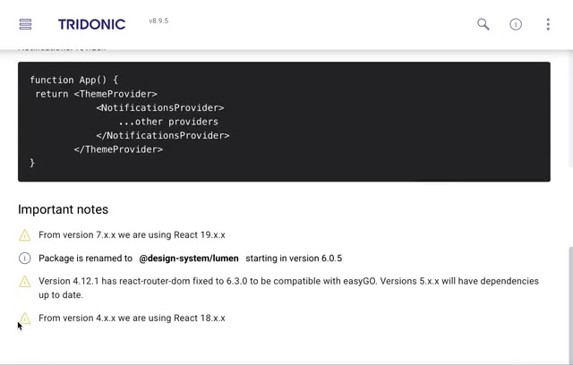
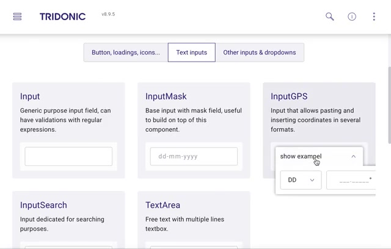
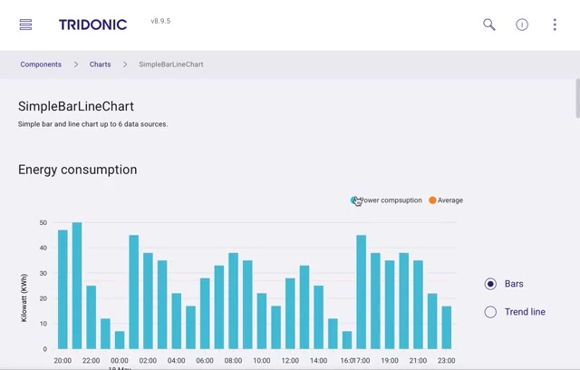
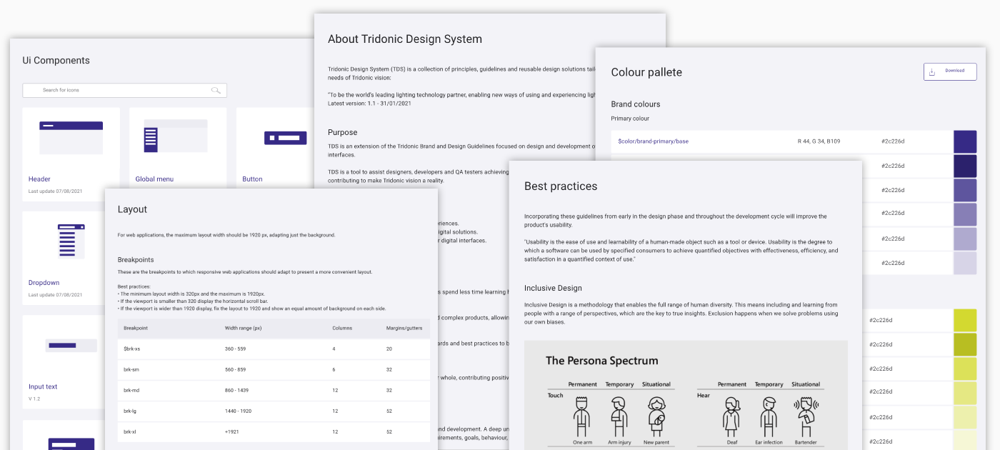
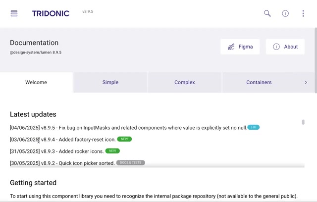

The documentation site of the coded library. Release notes, getting started, simple and complex components, and the energy chart. About one minute, no sound.
Context and role
Tridonic was adding smart lighting and IoT apps quickly, and each team built its own interface. Customers met a different experience in every product, and teams rebuilt the same parts again and again. I ran the Tridonic Design System (TDS) as an internal product: its vision and roadmap, the case for it with business and engineering, the research behind it, the component library, and adoption across teams.
I defined the vision, strategy and roadmap for TDS.
I secured buy-in and alignment from business and engineering.
I researched where the experience was inconsistent across products.
I researched and designed the library of reusable components.
I drove adoption and contribution across internal teams.
The problem: the same parts, built many times
An audit of Tridonic's IoT and lighting apps found:
more than 200 unique UI components across more than 15 applications, many of them variations of the same thing;
designers spending about 20% of their time on manual consistency updates;
developers working from specifications that differed by team, and saying so.
That was design and technical debt growing with every new app, and an inconsistent experience for customers who used more than one product.
The goal
One consistent experience across every Tridonic app, and less time spent rebuilding the same parts, for web and mobile, from Figma to production code.
Design decisions
One source of truth, from Figma to code
Decisions about colour, type and spacing live as design tokens, generated from the Figma library into the code package, so a change in one place reaches every product. Each component page links back to its Figma source.
Figma libraryComponents and styles, with usage guidance.
Design tokensColours, type and spacing as variables, made by a tokens generator.
Code packageReact components, published to Tridonic's private registry.
ProductseasyGO and lichtMONITOR, and other Tridonic apps.
Trade-off: a token pipeline takes longer to set up than a shared Figma file, but it is the only way a change in Figma reaches every product's code without a manual hand-off.
Document every component as a working example
Each component page shows the live component, its properties you can change, and the source code those changes produce, next to a link to Figma. Developers copy working code, not a picture of it.

Component page. Change a property, see the code.

Getting started. Breaking changes stated up front: React versions, the package rename, easyGO compatibility.
Build the parts only this domain needs
Generic buttons and inputs are easy to find anywhere. What product teams couldn't find were parts for lighting and IoT, so the library includes them: an input that takes GPS coordinates in several formats for locating installations, a wheel picker with time zones for schedules across sites, an energy consumption chart, and a canvas editor with layers for drawing, used for floor plans.

InputGPS. Paste coordinates in any common format.
Complex components. A time picker with time zone.

Charts. Energy consumption, as bars or a trend line.
From guidelines to a living product
TDS started as documented guidelines and grew into a coded, versioned library that kept shipping after I left Tridonic in 2022.
January 2021TDS v1.1: guidelines site with components, layout grid, colour palette, best practices and inclusive design.
NextA coded React library; version 4.12.1 kept a router version easyGO needed.
Version 6Renamed to Lumen, published as @design-system/lumen.
June 2025Version 8.9.5 on React 19, with release notes for each update.

TDS v1.1 documentation, 2021. Components, layout and breakpoints, the colour palette, and inclusive design guidance built on Microsoft's Inclusive Design Persona Spectrum (permanent, temporary and situational disabilities).

Lumen v8.9.5, June 2025. The same system four years later: four releases in six days, each with a release note.
Results
90%fewer design inconsistenciesCompared with the original audit.
40%less development time on averageFor interfaces built with the library.
25%faster onboardingFor new designers and developers.
Versions, release notes, migration notes and a Figma link on every component are what kept teams on TDS. It needed a roadmap and a product owner like any other product.
Domain components earn adoption
Shared buttons are easy to copy from anywhere. The GPS input, the time-zone picker, the energy chart and the drawing canvas made TDS specific to Tridonic, and were the parts product teams couldn't build quickly on their own.